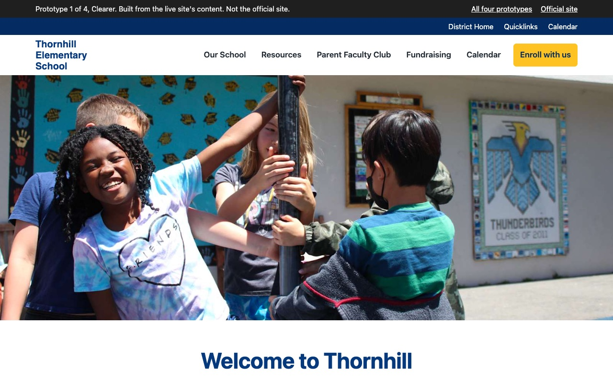
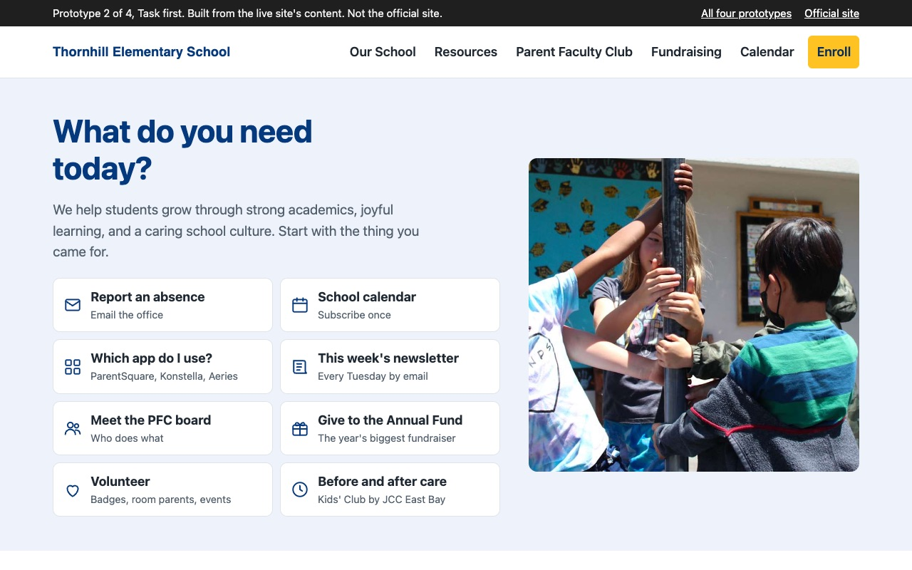
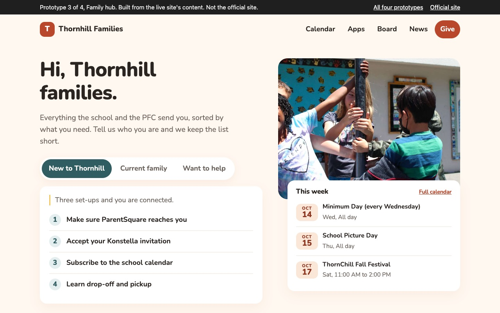
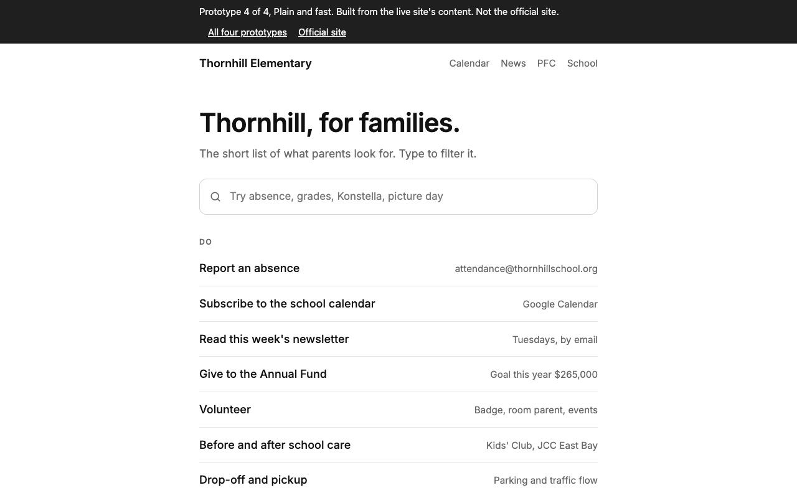

Each one is a homepage built from the same content: the live site's words, this week's events, the apps parents log into, and the PFC board. They run from the current site made clearer to a plain single column. Open each on your phone too.

The current site, made easier to read. Same order, same navy, bigger type, mixed-case navigation, and one row of family links under the welcome.
Open prototype 1
The same OUSD brand, reorganized around what a parent came to do. Tasks above the fold, this week next, then apps and the board.
Open prototype 2
A warmer, card-based home that reads like a family app. Pick who you are and the page shows your list.
Open prototype 3
One column, one typeface, no photos. A search box and short lists. Loads instantly on any phone.
Open prototype 4Names, roles, events, and copy come from thornhill.ousd.org and the PFC's own pages. Nothing here is live or official. The Apps and Board links open the earlier proof of concept.
| 1. Clearer | 2. Task first | 3. Family hub | 4. Plain and fast | |
|---|---|---|---|---|
| Look | OUSD navy and gold, unchanged | OUSD navy and gold | Brick, teal, and cream | White with a single navy accent |
| Flow | Identical to today | Reordered around parent tasks | Audience switcher, shortcuts, apps, people | Search, then five short lists |
| Type | Montserrat and Source Sans, 19px body | Montserrat and Source Sans | Nunito throughout | Inter, 18px |
| Photos | Both current photos | One current photo | One current photo | None |
| Pick it if | OUSD and the principal should recognize it instantly | The site stays on brand and starts answering questions | The PFC wants the site to feel like the community, with a mobile tab bar | Parents who want the answer in five seconds |